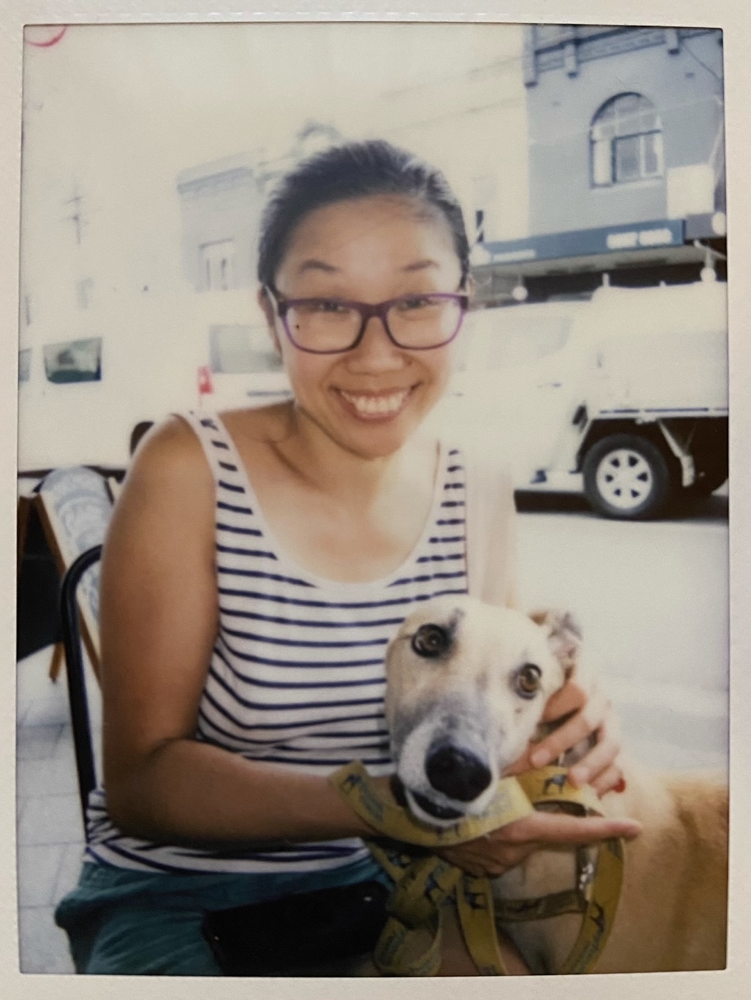

Statistics means never having to say you’re certain

Sandy completed the Master of Health Data Science in 2021 and is currently completing a Master of Biostatistics at University of Sydney through the NSW Ministry of Health Biostatistics Training Program. She is planning to start her PhD in medical information retrieval using natural language processing at the Center for Big Data Research in Health later this year.
As a data science student in 2020, I watched the pandemic unfolding with intense interest and fascination. I thought if we have perfect capture of data, it would be easy to make sense of everything. Naively, I thought modelling the spread of the disease seemed a ‘simple’ solution to plan and prepare for the progression of the pandemic. Fast forward one year, I was in the NSW Ministry of Health working as a trainee biostatistician with a team of analysts and epidemiologists that processed millions of COVID-19 surveillance records each day to find insights. Very quickly, I came to the realisation that the complexity and the nuances of data means something as simple as counting how many COVID-19 notifications we had in a day was not as straightforward as it seemed. As someone who often learns their lessons the hard way, this is a little reflection that I hope provides some discussion points in relation to the three tasks of data science, description, prediction and causal inference.

Description—the good, the bad, and the ugly
Data are beautiful, they provide insights in a world that is complicated and nuanced.
From a young age, I found solace in science and numbers. While people may not always be reliable and environments constantly change, numbers provide a constant. Measuring something makes it tangible and real—it’s like holding proof of its existence. Even though mathematics wasn’t my strongest subject in school, my admiration for its elegance and logic never waned. The brilliance of a well-crafted proof always sparked joy and pride in me. Pursuing an interest in biology, for about a decade my focus drifted to fiddling with small amounts of experimental data. However, my path eventually led me back to the field of statistics when I embarked on a Master of Health Data Science degree. This rekindled my passion for big data and its profound impact on understanding the world.
This time around the power of big data has become ever more apparent. Working with vast arrays of health data taught me how essential data-driven decision-making is in improving outcomes and anticipating future needs. Personally, I found joy in going through often messy and confusing data to refine my understanding of topics through coding logic. I appreciate how data sometimes challenges my perspectives, offering alternative viewpoints on the world around me. Most of all, I value the tangible impact my work has on enhancing public health.
Without an analytical and critical approach, it is easy to mislead by data.
One of the surprises I got from working as a biostatistician is that descriptive statistics can be really hard. Miguel Hernán defines Description as ‘using data to provide a quantitative summary of certain features of the world’.1 This sounds very simple and something almost anyone with a dataset and basic statistical knowledge could do—calculating the mean, median, interquartile range, or various proportions and rates. However, the existence of datasaurus2 is a reminder that one needs to know the dataset well, or one may end up with a useless descriptive measure.

Over the past three years, there were countless times I thought I have made a good summary statistic only to realise that I didn’t understand the question/data/context. Learning from my own mistakes, I started to ask some questions during any analysis:
- What is the primary purpose of the data and how were they collected?
- What am I trying to measure and how different is it to the primary purpose?
- Who has been included and who has been excluded in the data?
- Who has been included and who has been excluded in the measure?
- What contextual information might be relevant?
- What statistical measure/method is appropriate?
- What assumptions are we making when we measure like this?
- What are the limitation of the measure?
Drafting summary descriptions is generally a quick process, but as an analyst, I spend a not small amount of time using some of these numbers to construct a narrative. When I presented a table of averages (and standard deviations as a good statistician would do) to policymakers, they often struggle with interpreting this data. However, simply highlighting the proportion of the extreme responses in each category, suddenly it clarifies which areas might benefit most from policy interventions, making it evident where to target efforts more effectively. Unfortunately, the narrative isn’t always obvious at the beginning, or the connections might not immediately be clear. I like to think of the process of story building as playing with LEGO: I start with all the pieces and many ways to assemble them, but it’s only through building that I discover the optimal arrangement for each piece.
Lies, damned lies, and statistics
Data and statistics possess the dual potential to either construct deceptive and damaging messages or deliver insights from a rigorous study. Throughout the pandemic, we have seen many uses of data to support contradictory opinions. Even without any mal-intent, various statistical errors can infiltrate at every stage of a research project—from planning and data collection to analysis and interpretation. A sample might be biased, methodologies could be applied incorrectly, measurement errors introduced, and results selectively reported to highlight favorable outcomes. To guard against these pitfalls, I frequently refer to Spiegelhalter’s ‘Ten Questions to Ask When Confronted by a Claim Based on Statistical Evidence.’3 This resource serves as a critical tool for scrutinising not just the claims of others but also rigorously examining the integrity and robustness of my own research. It helps ensure that the conclusions drawn are both reliable and ethically sound, providing a safeguard against the inadvertent introduction of biases and errors that can skew the findings.

Even the most rigorously devised measures paired with a persuasive narrative don’t always lead to an effective description. Many are aware of Goodhart’s Law, which states that when a measure becomes a target, it ceases to be a good measure. This principle is difficult to keep in mind when you are directly involved in the measurement process. In the UK’s National Health Service (NHS), we have seen healthcare performance metrics such as elective surgery wait time targets leading to inaccurate reporting.4
Prediction—a tightrope between statistical and machine learning model
Time and time again, when people discover that I have backgrounds in both health data science and biostatistics, they often ask about my views on machine learning versus traditional statistical modeling. As a true statistician might respond, my answer is always, “it depends”. The appropriateness of either approach hinges on several factors: the purpose of the model, the volume of data available, the characteristics and interrelationships of the features within that data, and the intended end users of the model. A statistical model may perform just as effectively—or ineffectively—as a machine learning model. But the choice between the two might not rest on model performance. People put more trust in models that are understandable and backed by literature.
The phrase Probably Approximately Correct (PAC), which I came across in the context of computational learning, resonates with me as a good description for all predictive models. We turn to models because we lack the comprehensive data to describe phenomena in the detailed manners we desire. In an ideal world, with infinite data and flawless understanding of complex relationships, mathematical models would perfectly reflect reality. However, reality is far from this ideal. During the COVID-19 pandemic, various models predicted the spread of the virus based on initial data and assumptions about human behaviour and virus transmission. These models were essential for planning but had to be regularly updated as new information emerged. The PAC nature of modeling underscores that often there is no definitive answer to a problem, emphasizing the iterative and subjective dimensions of our work.
Causal inference—the holy grail and the pitfall

Causal inference has long been considered the holy grail of statistics because it moves beyond simple associations to establishing cause-and-effect relationships. This is crucial in many fields, particularly in policy-making, healthcare, and economics, where the goal is to intervene and change outcomes. Over the past decades, causal inference has evolved from relying solely on randomized controlled trials (RCTs), the gold standard for establishing causality, to incorporating observational data. This shift acknowledges the limitations of RCTs, including ethical concerns and practical constraints, which can prevent their use.
The inherent complexity of health data adds a layer of challenges to causal interpretation. For example, you can be misled by tables of adjusted associations between exposures and outcomes, that control for potential confounders using multivariable regression models. This phenomenon is known as the “Table 2 Fallacy” where these associations are misinterpreted as causal relationships.5
Personally, due to the limitations of health administrative data, causal inference seems to be a very distant, nearly unreachable goal. However, I’ve learned from framing questions and examininge them through the causal lens. Understanding the limitations inherent in data and methods can paradoxically strengthen the analytical approach. It becomes less about leveraging perfect data, and more about rigorously assessing what the available data can tell us about the relationships, despite their imperfections.
Learning the uncertainty

I started learning statistics hoping that I would be able to use it to make more sense of the world around me. After five years of studying and working, I am more uncertain than ever. I learned more about what I don’t know or haven’t learnt yet than what I know. I came to the realisation that in real life data is often messy and complex, but intricate, fascinating and beautiful.
Footnotes
Hernán, M. A., Hsu, J., & Healy, B. (2019). A Second Chance to Get Causal Inference Right: A Classification of Data Science Tasks. CHANCE, 32(1), 42–49. https://doi.org/10.1080/09332480.2019.1579578↩︎
Matejka, J., & Fitzmaurice, G.W. (2017). Same Stats, Different Graphs: Generating Datasets with Varied Appearance and Identical Statistics through Simulated Annealing. Proceedings of the 2017 CHI Conference on Human Factors in Computing Systems. https://doi.org/10.1145/3025453.3025912↩︎
Spiegelhalter, D. (2019). The Art of Statistics: How to Learn from Data. Basic Books. https://doi.org/10.5038/1936-4660.13.1.7↩︎
Public Accounts Committee. NHS waiting times for elective care in England. 2014. https://www.publications.parliament.uk/pa/cm201314/cmselect/cmpubacc/1002/100202.htm↩︎
Westreich, D., & Greenland, S. (2013). The Table 2 fallacy: presenting and interpreting confounder and modifier coefficients. American Journal of Epidemiology, 177(4), 292–298. https://doi.org/10.1093/aje/kws412↩︎